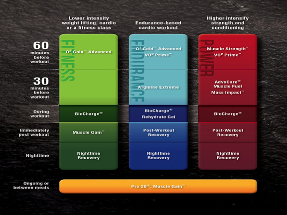

The 90 Day Mindset
"Challenge your body for 90 days, change your body for a lifetime."
Nutrition 101
Nutrition is key to your success. CrossFit will only take you so far. You will eventually hit a wall and get frustrated. Make sure to talk to your coach about dialing in your nutritional needs based off your goal. Here is a great video on CrossFit Nutrition.
The CrossFit dietary prescription is as follows:
Protein:
Should be lean and varied and account for about 30% of your total caloric load.
Carbohydrates:
Should be predominantly low-glycemic and account for about 40% of your total caloric load.
Fat:
Should be predominantly monounsaturated and account for about 30% of your total caloric load.
Calories:
Should be set at between .7 and 1.0 grams of protein per pound of lean body mass depending on your activity level. The .7 figure is for moderate daily workout loads and the 1.0 figure is for the hardcore athlete.
What Should I Eat?
In plain language, base your diet on garden vegetables, especially greens, lean meats, nuts and seeds, little starch, and no sugar. That's about as simple as we can get. Many have observed that keeping your grocery cart to the perimeter of the grocery store while avoiding the aisles is a great way to protect your health. Food is perishable. The stuff with long shelf life is all suspect. If you follow these simple guidelines you will benefit from nearly all that can be achieved through nutrition.
The Caveman or Paleolithic Model for Nutrition
Modern diets are ill suited for our genetic composition. Evolution has not kept pace with advances in agriculture and food processing resulting in a plague of health problems for modern man. Coronary heart disease, diabetes, cancer, osteoporosis, obesity and psychological dysfunction have all been scientifically linked to a diet too high in refined or processed carbohydrate. Search "Google" for Paleolithic nutrition, or diet. The return is extensive, compelling, and fascinating. The Caveman model is perfectly consistent with the CrossFit prescription.
What Foods Should I Avoid?
Excessive consumption of high-glycemic carbohydrates is the primary culprit in nutritionally caused health problems. High glycemic carbohydrates are those that raise blood sugar too rapidly. They include rice, bread, candy, potato, sweets, sodas, and most processed carbohydrates. Processing can include bleaching, baking, grinding, and refining. Processing of carbohydrates greatly increases their glycemic index, a measure of their propensity to elevate blood sugar.
What is the Problem with High-Glycemic Carbohydrates?
The problem with high-glycemic carbohydrates is that they give an inordinate insulin response. Insulin is an essential hormone for life, yet acute, chronic elevation of insulin leads to hyperinsulinism, which has been positively linked to obesity, elevated cholesterol levels, blood pressure, mood dysfunction and a Pandora's box of disease and disability. Research "hyperinsulinism" on the Internet. There's a gold mine of information pertinent to your health available there. The CrossFit prescription is a low-glycemic diet and consequently severely blunts the insulin response.
Caloric Restriction and Longevity
Current research strongly supports the link between caloric restriction and an increased life expectancy. The incidence of cancers and heart disease sharply decline with a diet that is carefully limited in controlling caloric intake. “Caloric Restriction” is another fruitful area for Internet search. The CrossFit prescription is consistent with this research. The CrossFit prescription allows a reduced caloric intake and yet still provides ample nutrition for rigorous activity.
Supplements
Supplements are used to fill in the gaps that lack in your nutrition. It is very hard to get everything your body needs from just food. At CrossFit Texas we recommend AdvoCare because of 3 things. It is safe, it works, everyone is entitle to get the 40% discount for life. There is over 250 years of science behind the product. Products are tested by Inform Choice that gives us safety in knowing that our products are tested for banned substance. The best thing is that everyone has an opportunity to get it at 40% discount for life with out being on some sort of autoship. You only order what you want when you want it. Get a better product for cheaper cost and not worry about contraband substance is a win-win.
At CrossFit Texas, we don't push products on anyone. That is the whole reason why I left a big box and opened CrossFit Texas. We simply share our products because of the amazing results we get from the products. We teach everyone that Nutrition, Crossfit (2x to 4x week) and supplementation will help in your everyday life. In my oppinion, everyone should be on a multivitamin and fish oil. Spark is just simply awesome, it helps in mental focus and I feel great when I take it. Since we have over 80 products, the rest is available to fill in the gaps depending on your goals. You have an assortment of all different types of protein based on individual goals. Only take the products that will benefit you. It's like shopping at the grocery store. You only buy the foods you need. Your goals may differ from the other so thats why Advocare is the perfect relationship for us. Ask your coach today to get all the information you need so that you can make the best decision for yourself.
These are products that we would recommend. Work with your coach and experiment with them and see for you.
We recommend the 24 Day Challenge to anyone who wants to:
- Loose weight
- Gain energy
- Increase performance
- Gain muscle
- Combination of them
Core Supplements I recommend every day:
- MNS3, MNS E, or MNS C
- Omega Plex
- Spark
- Catalyst
Supplements for Recovery:
- Night Time Recovery
- Post Workout Recovery (multiple flavors)
- Rehydrate (multiple flavors)
- Bio Tools